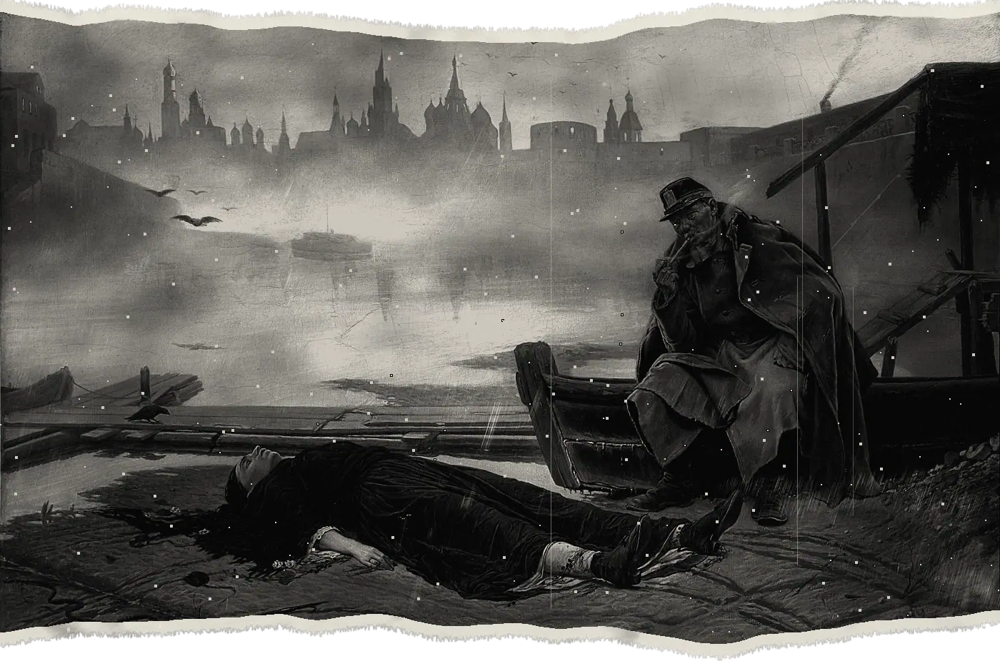

VOL. I · PLATE E · 05 / 12
THE RETURNING DEAD
The unclean dead and the trouble with categories
Not every dead person was thought to stay dead. The distinction was not good and evil but proper and improper death — and the category that names it has been under dispute for a century.
Recorded 19th–early 20th c.; category proposed 1916 · European Russia; regional variation · Folk belief; not church doctrine

E / 01
Zelenin’s ‘pledged’ dead
In 1916 D. K. Zelenin published a study of those who die an unnatural death — by suicide, accident, murder, drowning, or before their time — and of the rusalki. His term for them, zalozhnye pokoiniki, is usually translated as ‘pledged’ or ‘unclean’ dead: those whose death was not completed within the order of things.
Zelenin argued that such dead were buried apart, outside the cemetery or at its edge, in ravines, fields or at crossroads, and that they were believed to remain active — to walk, to appear, to harm. The book is a work of synthesis and it is also a work of its time, assembled from scattered reports into a system that no single informant would have recognised.
E / 02
The dispute
Later scholarship has treated Zelenin’s category with caution. The reports he gathered come from different provinces, different decades and different genres — legend, memorate, custom, ecclesiastical prohibition — and the boundary between ‘unclean’ and ‘clean’ death was drawn differently from place to place. Whether the rusalka is a development of the unclean dead, as Zelenin proposed, remains an interpretation rather than a finding.
The atlas therefore presents zalozhnye as a scholarly construction built on real reports, not as a folk taxonomy that everyone shared. The reports are evidence. The category is an argument.

E / 03
Case notes, without the case
The reports share a structure: a death that violates expectation, a burial that violates place, and a subsequent sighting or disturbance. The disturbance is usually resolved by a ritual action — moving the body, reading a prayer, driving a stake, calling the priest — and the resolution tells us more about the living than about the dead.
No narrative is reproduced verbatim in this atlas. The genre is highly variable, the published texts are often retold rather than transcribed, and a single vivid quotation would misrepresent the record as more uniform than it is.

E / 04
What the category was for
The unclean dead mark the limits of the community’s obligation. They are the people for whom the full ritual was not, or could not be, performed — and the fear they provoke is the fear of an obligation left unpaid. In this reading the revenant is less a monster than an unpaid debt with a voice.
That reading is the atlas’s interpretation, offered as such. It does not require the dead to be real; it requires the living to have accounts.

Apparatus sources · related plates · terms
Sources for this plate
- zelenin1916 Zelenin, Dmitry K. — Очерки русской мифологии. Вып. 1: Умершие неестественною смертью и русалки (1916)
- ivanits1989 Ivanits, Linda J. — Russian Folk Belief (1989)
- tolstoy1995 Tolstoy, Nikita I. (ed.); Tolstaia, Svetlana M. (ed., vol. 5) — Slavianskie drevnosti: Etnolingvisticheskii slovar’ (1995–2012)
- baiburin1993 Baiburin, Albert Kashfullovich — Ritual v traditsionnoi kul’ture (1993)
URLs, access dates and limitations are in the bibliography.